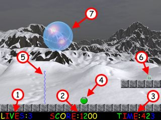

Learn how Bang On! was made in TNT Basic
and how to make fun changes at tntbasic.com!
MILLIONS OF YEARS AGO WHEN THE EARTH WAS NEW........
...there lived a race of little green blobs. These were the first life forms graced with intelligence and they are the reason life remained possible at all....
In it's infancy the Earth was an unstable, inhospitable place. Long before the atmosphere could support life as we know it today the Earth's swamps and volcanos would produce bubbles of noxious, suffocating carbon monoxide. Once free, these bubbles would roam the earth destroying everything in their path. Life on Earth was coming to an end!!
The little green blobs, however, had a plan. They could easily neutralise small bubbles and turn them into harmless carbon dioxide, however, some of the bubbles were too large for their technology, so they needed to be broken down first. The little green blobs now knew that one of them was going to have to face these bubbles. What they needed was a hero....
Use the arrow keys on the keyboard to control the little green blob.
The left and right arrow keys move the little green blob left and right respectively, and the up arrow key makes the little green blob jump. Space makes the little green blob fire it's currently active weapon.
Be careful though, if the little green blob comes into contact with a bubble then it will be killed!
Good Luck!
There are three power-ups available in Bang On! and they are all concerned with weapons.
Twin Lasers
Very fast firing but does not leave a trail behind. It will disappear i it hits a brick or the top of the screen. This is very good for doing lots of damage to bubbles very quickly but can be difficult to use on low altitude bubbles.
Spirals
Moves slowly upwards and leaves a trail behind that damages bubbles. Up to three can be active at the same time, but if it hits the top of the screen or a brick then it will disappear. A good all round weapon.
Grappling Hook
Moves slowly up the screen and leaves a trail behind that damages bubbles. If this hits the top of the screen or a brick then itstops and stays there for a while or until a bubble hits it. Three can be active at the same time but because these stay around for a long time this can sometimes mean you are unable to fire. Still, this is very useful if you are stuck in a tight corner.
| 1 Lives Indicator This is how many lives you have remaining. When you have no more lives left then the game is over. |
 | 6 Power Up By collecting these it changes your weapon. |
|||||||
| 7 Bubble This is a bubble. You need to burst these to win the level. Be careful though, big ones split in two. |
|||||||||
| 2 Score Indicator The bigger the score, the better you've done. |
|||||||||
| 4 Little Green Blob This is the little green blob that you control. |
5 Spiral This is a spiral that has been shot by you. |
||||||||
| 3 Time Indicator At the end of a successful level, the remaining time is added to the score. |
|||||||||
Bang On! is a FREE GAME created by John Treece-Birch of TNT Software using TNT Basic.
Visit tntasic.com for more info on TNT Basic.
You are free to reuse any part of Bang On!, including the graphics and source code in any TNT Basic game. You may not reuse parts of Bang On! for any non TNT Basic production.
Bang On! is © John Treece-Birch 2001.